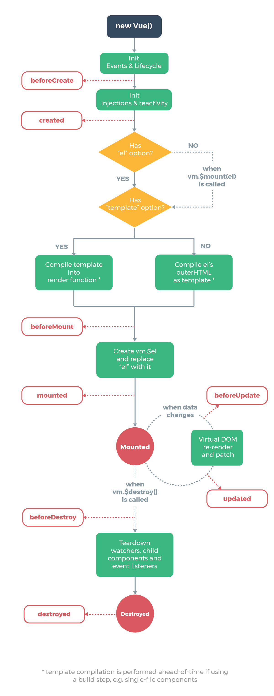

总结：每个 Vue 实例在被创建时都要经过一系列的初始化过程——例如，需要设置数据监听、编译模板、
将实例挂载到 DOM 并在数据变化时更新 DOM 等。同时在这个过程中也会运行一些叫做生命周期钩子的函
数，这给了用户在不同阶段添加自己的代码的机会。
1.created 钩子可以用来在一个实例被创建之后执行代码
new Vue({
data: {
a: 1
},
created: function () {
// `this` 指向 vm 实例
console.log('a is: ' + this.a)
}
})
// => "a is: 1"
2.也有一些其它的钩子，在实例生命周期的不同阶段被调用，如 mounted、updated 和 destroyed。生命周期钩子的 this 上下文指向调用它的 Vue 实例。
不要在选项属性或回调上使用箭头函数，比如 created: () => console.log(this.a) 或 vm.$watch('a', newValue => this.myMethod())。
因为箭头函数并没有 this，this 会作为变量一直向上级词法作用域查找，直至找到位置，经常导致 Uncaught TypeError: Cannot read
property of undefined 或 Uncaught TypeError: this.myMethod is not a function 之类的错误。
